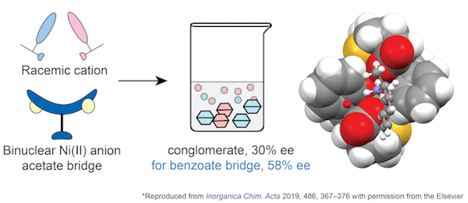

1. Das, C. R.; Dutta, T.; Ray, M. Effect of Ligand and Bridge Substitution on Chiral Recognition of 1-Phenylethylammonium Cation by an Anionic Binuclear Ni(II) Complex. Inorganica Chim. Acta 2019, 486, 367–376. Link

2. Dutta, T.; Ray, M. Site orientation, accessibility, and surface hydrophobicity control on AFC polymer to increase hexavalent chromium removal performance. Chemical Engineering Journal, 2021, Just Accepted. Link
Conferences
- Delivered poster presentation on “Reversal of Solvent Ratio Switches Hydrophobicity of the Aniline-formaldehyde Condensate Favouring Cr(VI) Removal from Waste Water” at “FICS-2016” held at Dept. Of Chemistry, Indian Institute of Technology Guwahati.
- "GDCH-Angewandte and CRSI Symposia" held on 13th and 16th July 2016 at University of North Bengal, Darjeeling.
- UGC sponsored two days’ national seminar on “Frontiers in Chemistry-2015” held on 17th and 18th February 2015 in Dept. Of Chemistry, University of North Bengal.
- Delivered seminar on “Spectroscopic Characterization and Physiochemical Study of the Inclusion complex of β-Cyclodextrin and Thiosemicarbazone.” during post-graduation level. (2014) Collected information from project work.
- “5th Asian Conference on Colloid and Interface Science (ACCIS 2013)” hosted by Asian Society for Colloid and Surface Science, organised by Dept. Of Chemistry, University of North Bengal held on 20th to 23rd November 2013 in Dept. Of Chemistry, University of North Bengal.